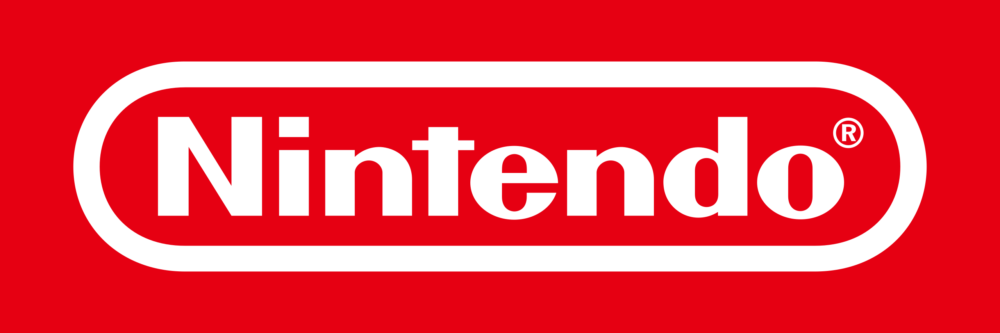

Nintendo
¿Qué es Nintendo?
Nintendo Company, Ltd. es una empresa de entretenimiento dedicada a la investigación y desarrollo, producción y distribución de software y hardware de videojuegos, y juegos de cartas, con sede en Kioto, Japón. Su origen se remonta a 1889, cuando comenzó a operar como Nintendo Koppai tras ser fundada por el artesano Fusajirō Yamauchi con el objetivo de producir y comercializar naipes Hanafuda. Tras incursionar en varias líneas de negocio durante la década de 1960 y adquirir una personalidad jurídica de empresa de capital abierto bajo la razón social actual, en 1977 distribuyó su primera videoconsola en Japón, la Color TV Game 15.
Sus productos incluyen algunas de las consolas y títulos más influyentes y exitosos en la industria de los videojuegos, como la Nintendo Entertainment System, la Super Nintendo Entertainment System, la Wii y la Game Boy.

Antecedentes de Nintendo Company
Los antecedentes de Nintendo se remontan al 23 de septiembre de 1889 cuando el artesano Fusajirō Yamauchi fundó la empresa Nintendo Koppai en Kioto, Japón, con el objetivo de producir y comercializar naipes Hanafuda, cuya principal característica es que incorporan ilustraciones en vez de números. Este rasgo le permitió a Yamauchi comercializar sus cartas pese a que las autoridades de Japón tenían prohibidos los juegos de apuestas desde 1633. Para su fabricación usaba la corteza de moreras, que él mismo pintaba a mano. La demanda del producto eventualmente se incrementó y Yamauchi debió contratar asistentes para producir en serie. Aunque el término «Koppai» está asociado con «cartas», existe imprecisión en la etimología de «Nintendo». Por lo general se considera que es una palabra compuesta cuyo significado es «deja la suerte al cielo» o «deja la fortuna en manos del destino» en alusión a la prohibición de los juegos de azar en Japón—, aunque existe la hipótesis de que los sinogramas kanjis podrían referirse también al «juego de azar».
La oferta inicial de Nintendo Koppai se vio completada con otras barajas como la dedicada al Hyakunin Isshu; las Daitoryo «presidente» que eran las más populares en Kiotoy otras de estilo occidental, las primeras de ese tipo en Japón. A pesar de un comienzo favorable, la compañía atravesó ciertas dificultades financieras debido a que el proceso de fabricación de las cartas era lento y costoso, mientras que los precios fijados por Yamauchi eran elevados. Otros factores de riesgo eran el limitado nicho de mercado al que pertenecía la empresa, y la amplia durabilidad de las cartas, un aspecto que impactaba en las ventas debido a la escasa tasa de reposición del producto. A manera de solución, el empresario redujo los precios, comenzó a producir cartas de menor calidad a las cuales denominó "Tengu" y buscó ofrecer sus productos en otras ciudades como Osaka, donde se movían cantidades considerables de dinero en partidas de cartas donde se apostaban sumas que podían llegar a ser muy elevadas, además de que los empresarios locales del giro podían estar interesados en una renovación casi continua de sus barajas, evitando así las suspicacias que generaba reutilizar cartas. Según datos de la propia compañía, su primera baraja occidental fue puesta en el mercado en 1902, aunque otros documentos retrasan la fecha hasta 1907, poco después de la guerra entre Japón y Rusia. Este contexto bélico generó notables dificultades a las empresas de la época, en especial a las del sector del ocio que estuvieron sujetas a nuevos gravámenes como la tasa Karuta Zei. Pese a lo anterior, la compañía subsistió y, en 1907, estableció un acuerdo con Nihon Senbai más tarde titulada Japan Tobacco & Salt Corporation para comercializar sus cartas en varios locales de cigarrillos a lo largo del país.
La cultura japonesa estipulaba que, para que Nintendo Koppai continuara como una empresa familiar tras la jubilación de Yamauchi, este debía adoptar a su yerno como hijo propio para que pudiera hacerse cargo del negocio. Como resultado, Sekiryo Kaneda adoptó el apellido «Yamauchi» en 1907 y, un par de décadas después, en 1929, se convirtió en el segundo presidente de Nintendo Koppai. Para entonces, era «la compañía más grande de juegos de cartas» en Japón.
Consolas de Nintendo Company